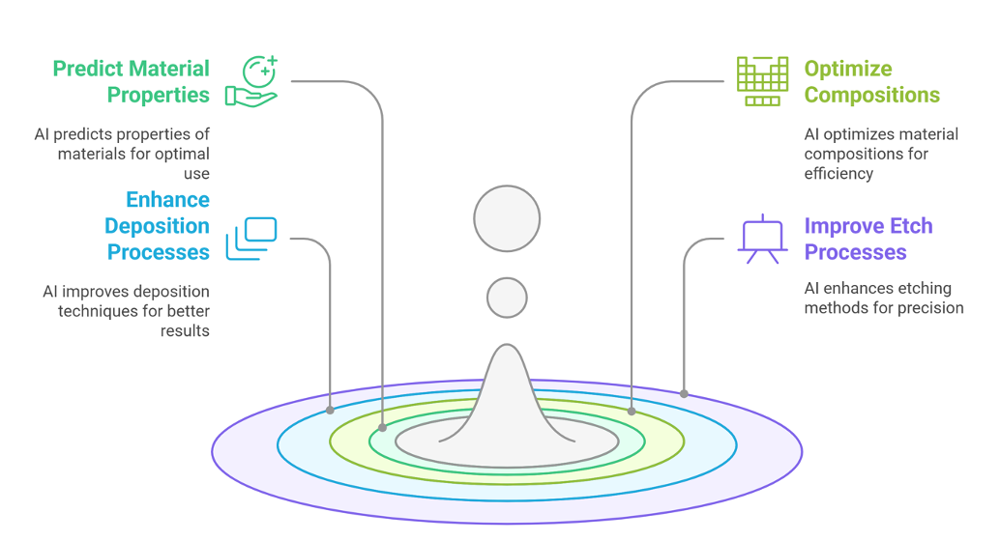
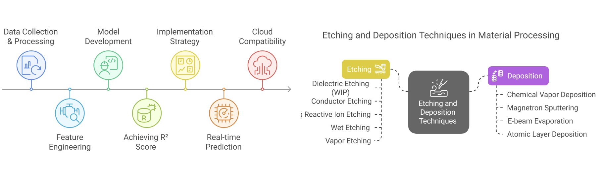
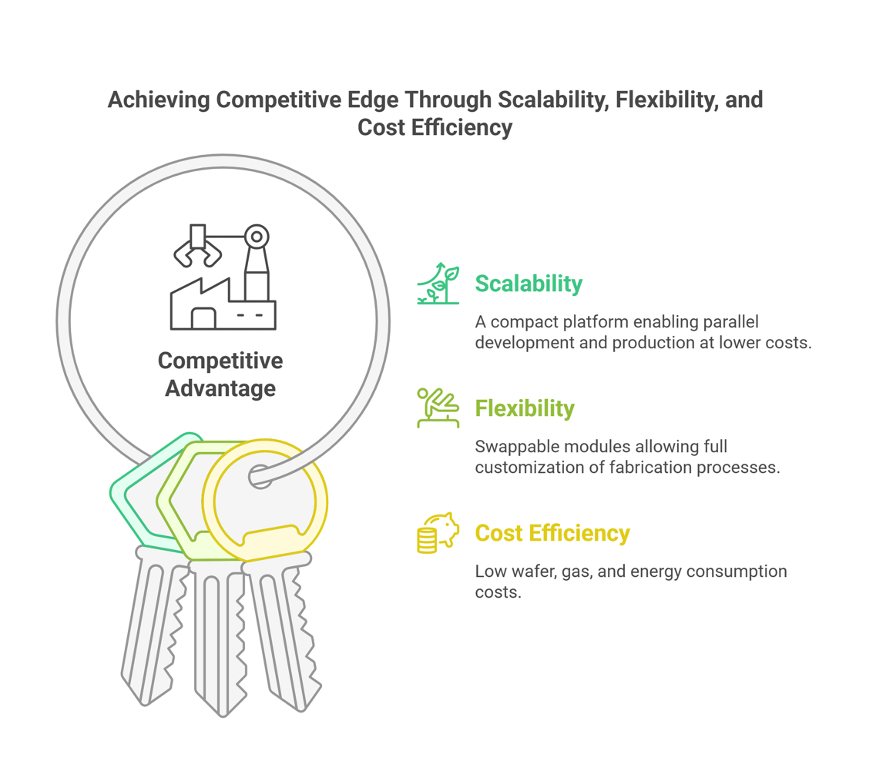

Welcome to AiMap, a project focused on using artificial intelligence to optimize semiconductor manufacturing processes. This application showcases how AI can be applied to predict material properties and fine-tune composition settings for deposition and etch processes—critical steps in chip fabrication. With a clean, modern layout, this showcase presents the core challenges in the industry and how AI-based solutions can address them.
AiMap tackles this problem by using AI to drive efficiency and insight across the production cycle. The platform enables accurate prediction of material properties, smarter deposition process control, and refined composition optimization. It enhances etching precision while reducing waste and production costs. The result is improved yield, faster development cycles, and better overall quality control in semiconductor manufacturing.
Semiconductor manufacturing often struggles with optimizing etch processes due to the complex and interdependent nature of key metrics like etch rate, profile control, uniformity, and selectivity. These factors are difficult to model and predict, traditionally requiring time-intensive experimentation across millions of parameter combinations. Current methods are resource-heavy, slow, and expensive, creating a bottleneck in scaling innovations. To integrate advanced predictive modeling with real-time yield optimization and quality assurance protocols, delivering scalable solutions for semiconductor wafer manufacturing at industrial volumes.
